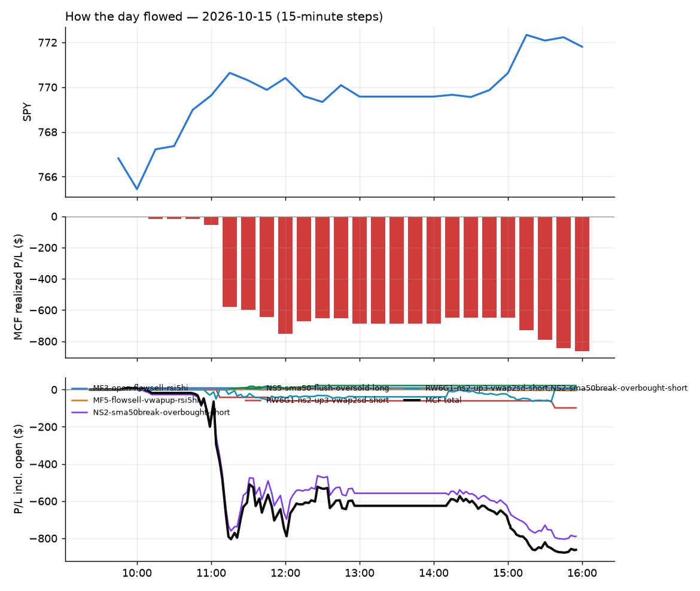

48 trades · win rate 21% · P/L $-861.83
PROBATION: no live setup has passed both locked test periods. 10 owner-directed setups added 2026-10-08 (MarcoFlow top 5 + 5 new), untested live. RW6G1 (RW6 + VWAP band guard) added 2026-10-09, probation.

| Symbol | Setup | Side | In | Out | Entry | Exit | Exit reason | % gained | P/L |
|---|---|---|---|---|---|---|---|---|---|
| NVTS | Big Gainer Average Reclaim Fade (NS2-sma50break-overbought-short) | short | 11:05 | 12:12 | 9.24 | 9.03 | target | +2.27% | $43.47 |
| CBRS | Big Gainer Average Reclaim Fade (NS2-sma50break-overbought-short) | short | 10:45 | 14:13 | 140.73 | 137.81 | target | +2.07% | $37.92 |
| OUST | Big Gainer Average Reclaim Fade (NS2-sma50break-overbought-short) | short | 11:11 | 12:10 | 31.18 | 30.58 | target | +1.92% | $36.60 |
| Symbol | Setup | Side | In | Out | Entry | Exit | Exit reason | % lost | P/L |
|---|---|---|---|---|---|---|---|---|---|
| ARM | NS2-sma50break-overbought-short | short | 11:00 | 15:03 | 237.26 | 242.98 | stop | -2.41% | $-45.76 |
| ASTS | NS2-sma50break-overbought-short | short | 11:05 | 11:59 | 42.41 | 43.42 | stop | -2.39% | $-45.53 |
| PURR | NS2-sma50break-overbought-short | short | 10:55 | 11:14 | 9.44 | 9.65 | stop | -2.22% | $-42.42 |
| LUNR | NS2-sma50break-overbought-short | short | 10:55 | 11:06 | 10.97 | 11.21 | stop | -2.19% | $-41.76 |
| LUNR | RW6G1-ns2-up3-vwap2sd-short | short | 10:55 | 11:06 | 10.97 | 11.21 | stop | -2.19% | $-41.76 |
| MDB | NS2-sma50break-overbought-short | short | 11:05 | 15:38 | 357.46 | 365.02 | stop | -2.11% | $-37.80 |
| MDB | RW6G1-ns2-up3-vwap2sd-short | short | 11:05 | 15:38 | 357.46 | 365.02 | stop | -2.11% | $-37.80 |
| SMR | NS2-sma50break-overbought-short | short | 11:00 | 11:11 | 5.82 | 5.94 | stop | -2.06% | $-39.36 |
| LEU | NS2-sma50break-overbought-short | short | 11:01 | 11:12 | 120.00 | 122.44 | stop | -2.03% | $-36.60 |
| TEM | NS2-sma50break-overbought-short | short | 10:45 | 10:56 | 68.77 | 70.13 | stop | -1.98% | $-36.72 |
Signal to fill: median 1s, 90th percentile 3s (48 trades). Bars close each minute; the order follows the bar close.
Best excursion (MFE): median 0.31R; worst (MAE) median 1.01R. 46% of trades never got +0.25R in our favour; 3 reached +1R and still closed at or below 0.
| Symbol | Setup | Best R | Worst R | Closed R |
|---|---|---|---|---|
| BE | NS2-sma50break-overbought-short | +1.39 | -1.02 | -1.03 |
| STM | NS2-sma50break-overbought-short | +1.79 | -0.98 | -0.39 |
| NXT | NS2-sma50break-overbought-short | +1.01 | -1.00 | -1.00 |
| RDDT | NS2-sma50break-overbought-short | +0.78 | -1.25 | -1.18 |
| GFS | NS2-sma50break-overbought-short | +0.72 | -1.52 | -1.21 |
| Entry time | Trades | Win | Avg R | P/L |
|---|---|---|---|---|
| 09:50-10:30 | 2 | 50% | +0.18 | $-17.95 |
| 10:30-11:30 | 46 | 20% | -0.60 | $-843.88 |
| Setup | Trades | Win | Avg R | Adj R (net of SPY) | P/L |
|---|---|---|---|---|---|
| Early Sellers into a Pop (MF3-open-flowsell-rsi5hi) owner-directed; holdouts once: Sep-Oct -0.059R n170, Apr-Jun -0.034R n729 | 1.0 | 100% | +1.54 | +2.25 | $8.81 |
| Sellers into Strength (all day) (MF5-flowsell-vwapup-rsi5hi) owner-directed; holdouts once: Sep-Oct -0.001R n264, Apr-Jun -0.010R n1199 | 1.0 | 0% | -1.01 | -0.05 | $-5.18 |
| Big Gainer Average Reclaim Fade (NS2-sma50break-overbought-short) owner-directed; holdouts once: Sep-Oct -0.115R n76, Apr-Jun +0.021R n587 | 42.0 | 19% | -0.63 | -0.58 | $-788.87 |
| Big Loser Flush Buy (NS5-sma50-flush-oversold-long) owner-directed; holdouts once: Sep-Oct -0.008R n73, Apr-Jun +0.002R n231 | 1.0 | 100% | +2.10 | +2.53 | $21.69 |
| Big Gainer Fade with VWAP Band Guard (RW6G1-ns2-up3-vwap2sd-short) owner-directed; two-year history +0.26R n424 t2.39 (required 4.76), positive up and down sessions; locked block not scored | 3.0 | 0% | -1.03 | -1.02 | $-98.28 |
Market direction (SPY, beta 1) accounted for $-106.45 of today's $-861.83; the rest ($-755.38) came from the setups themselves. Avg R net of SPY: -0.47 (incl. a hedge leg's cost; report only).
10 setups live today. Today: 74 signals, 48 taken, 0 lost because another setup held the symbol (0%). Since 2026-10-06 (8 sessions): 438 signals, 275 taken, 33 lost to other setups (8%). Peak open positions today 31 of 160 slots. Earnings blackout removed 224 symbols before scanning.
Simulated playing time (not live): 161 what-if trades of signals not taken, avg +0.01R, 53% winners; of them 33 lost to another setup (avg -0.04R).
Silent: intraday_momentum · Crowded out: MF3-open-flowsell-rsi5hi, MF5-flowsell-vwapup-rsi5hi · Starved: NS4-pm-vwap-reclaim-oversold-short
| Prio | Setup | Today sig / taken | Sessions | Signals / taken / trades | Taken/day | Expected/day | Lost to other setups | Lost to (setup n) | Top skip reasons | SIMULATED: not-taken n / avg R / win | Verdict |
|---|---|---|---|---|---|---|---|---|---|---|---|
| 1 | Big Gainer Fade with VWAP Band Guard RW6G1-ns2-up3-vwap2sd-short | 4 / 3 | 5 | 5 / 3 / 3 | 0.60 | 0.40 | 0 | – | not shortable / shorts off 1, spread / quote / size 1 | 2 / +0.22R / 50% | slow 3.0 entries/week; ~20 weeks to 60 trades |
| 2 | Big Gainer Dip-and-Pop NS1-rsidip-rsi5pop-long | 0 / 0 | 6 | 6 / 5 / 5 | 0.83 | 0.92 | 0 | – | spread / quote / size 1 | 1 / +0.32R / 100% | slow 4.2 entries/week; ~14 weeks to 60 trades |
| 3 | Early Sellers, Mid-High RSI MF2-open-rsimidhi-flowsell | 0 / 0 | 6 | 7 / 4 / 4 | 0.67 | 1.30 | 0 | – | spread / quote / size 2, not shortable / shorts off 1 | 3 / -0.02R / 33% | slow 3.3 entries/week; ~18 weeks to 60 trades |
| 4 | Big Loser Flush Buy NS5-sma50-flush-oversold-long | 1 / 1 | 6 | 6 / 6 / 6 | 1.00 | 2.41 | 0 | – | – | 0 / – | slow 5.0 entries/week; ~12 weeks to 60 trades |
| 5 | Afternoon VWAP Reclaim Fade NS4-pm-vwap-reclaim-oversold-short | 0 / 0 | 6 | 6 / 3 / 3 | 0.50 | 3.05 | 0 | – | not shortable / shorts off 3 | 3 / -1.16R / 0% | starved 0.50 entries/day vs ~3.05 expected |
| 6 | Early Sellers Above VWAP MF1-945-flowsell-vwapup | 1 / 0 | 6 | 20 / 9 / 9 | 1.50 | 5.33 | 1 | MF4-h40-open-flowsell 1 | spread / quote / size 8, not shortable / shorts off 2, symbol held by another setup 1 | 11 / +0.10R / 46% | slow 7.5 entries/week; ~8 weeks to 60 trades |
| 7 | Big Gainer Average Reclaim Fade NS2-sma50break-overbought-short | 58 / 42 | 6 | 77 / 54 / 54 | 9.00 | 5.74 | 0 | – | not shortable / shorts off 16, spread / quote / size 7 | 23 / -0.02R / 48% | ok 45.0 entries/week |
| 8 | Early Sellers, Strong Heat MF4-h40-open-flowsell | 3 / 0 | 6 | 27 / 16 / 16 | 2.67 | 7.24 | 2 | MF5-flowsell-vwapup-rsi5hi 1, MF3-open-flowsell-rsi5hi 1 | not shortable / shorts off 5, spread / quote / size 4, symbol held by another setup 2 | 11 / +0.08R / 64% | slow 13.3 entries/week; ~4 weeks to 60 trades |
| 9 | Early Sellers into a Pop MF3-open-flowsell-rsi5hi | 2 / 1 | 6 | 35 / 18 / 18 | 3.00 | 9.19 | 10 | MF4-h40-open-flowsell 6, MF1-945-flowsell-vwapup 3, NS2-sma50break-overbought-short 1 | symbol held by another setup 10, spread / quote / size 4, not shortable / shorts off 3 | 17 / -0.26R / 47% | crowded-out 10 of 35 signals (29%) lost to setups already holding the symbol |
| 10 | Sellers into Strength (all day) MF5-flowsell-vwapup-rsi5hi | 5 / 1 | 6 | 56 / 25 / 25 | 4.17 | 15.47 | 18 | MF3-open-flowsell-rsi5hi 9, MF4-h40-open-flowsell 5, MF1-945-flowsell-vwapup 3 | symbol held by another setup 18, spread / quote / size 8, not shortable / shorts off 3 | 31 / -0.18R / 48% | crowded-out 18 of 56 signals (32%) lost to setups already holding the symbol |
Every trade is attached as a CSV you can open and edit in Excel or Google Sheets. Live page: https://misiti15.github.io/MCF/live/